曾经有一种说法是，去拉斯维加斯结婚，去里诺离婚。而现在，你可以前往这两座城市玩一把角子机。里诺的佩珀米尔赌场有1900台角子机，但它还不是城中最大的赌场。穿过赌场的大厅，轮盘赌桌和21点的赌桌在一排排闪烁、旋转、嘟嘟作响的角子机的衬托下，显得黯然失色。科技的进步让这些“独臂土匪”失去了摇杆，也没有了机械的内核。玩家现在可以通过按下发光的按钮或点击触摸屏来下注。偶尔能听到硬币哗啦啦的声音，但这来自预录的样本，因为硬币已经被电子信用卡取代。
角子机是赌场产业的前沿，是博彩的前线，也是底线。这些机器在美国每年能挣250亿美元（除去它们兑付的所有奖金后），大约是美国每年电影总票房的2.5倍。在全球赌场文化中心内华达州，角子机的收入如今占博彩收入的近70%，而且这个数字每年还在上升。
概率是对可能性的研究。当我们掷硬币或玩角子机时，我们不知道硬币会如何落下，也不知道旋转的滚筒会停在哪里。概率为我们提供了一种语言，来描述硬币正面朝上，或者我们中头彩的可能性。通过数学方法，不可预测性变得非常可预测。概率似乎是我们日常生活中理所当然的一部分，比如在查看天气预报时，我们默认预报结果会以一个概率出现。但在人类思想史上，意识到数学可以告诉我们未来的这个想法是近几百年才出现的，且影响深远。
我来里诺是为了见一位数学家，世界上超过一半的角子机的赔率是由他设定的。他的工作有悠久的历史渊源，概率论最早是16世纪由赌徒吉罗拉莫·卡尔达诺提出的，我们在讨论三次方程时曾提到过这位意大利朋友。这种会导致自我厌恶的嗜好给数学带来了突破，这是很罕见的。“我过分沉迷于棋盘和赌桌，我知道我必须受到最严厉的谴责。”他写道。他的坏习惯让他写出了一部短小的专著，名叫《论赌博游戏》，这是第一部科学分析概率的作品。然而，这本书太超前了，直到他死后一个世纪才出版。
卡尔达诺的观点是，如果一个随机事件有几个具有相同可能性的结果，那么任何一个结果发生的概率等于该结果数目与所有可能结果数目之比。也就是说，如果某件事占了6个可能结果中的一个，它发生的概率就是六分之一。所以，当你掷色子时，得到6的概率是1/6。掷出偶数的机会是3/6，也就是1/2。概率可以被定义为某种事情发生的可能性，用分数表示。不可能发生的概率为0，而确定会发生的概率为1，其余的均介于两者之间。
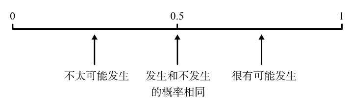
这看起来很直观，但事实并非如此。古希腊人、古罗马人和古印度人都是狂热的赌徒，然而，似乎没有人试图理解随机性是如何被数学定律支配的。例如，在罗马，掷硬币是解决争端的一种方式。如果掷到了恺撒大帝的头像这一面，那就意味着同意这个决定。随机性并没有被认为是随意的，而是一种神圣意志的表达。纵观历史，人类在寻找解释随机事件的方法上具有非凡的想象力。例如，“书本占卜术”（rhapsodomancy）就是通过在文学作品中随机选择一段文字来给出指导。同样，根据《圣经》，拣选短麦秆是一种公平的选择方式，但得出的结果被解释为上帝的意志：“签放在怀里，定事由耶和华。”（《箴言》16:33）
迷信给概率的科学研究带来了极大的阻碍，但在掷了几千年色子之后，神秘主义被一种更强烈的人类欲望所克服，那就是对经济利益的渴望。吉罗拉莫·卡尔达诺是第一个把命运握在手里的人。事实上可以这么说：概率的发明是近几个世纪迷信和宗教衰落的根源。如果不可预测的事件遵从数学规律，就不需要神明来解释它们了。世界的世俗化通常被认为是查尔斯·达尔文和弗里德里希·尼采等思想家的功劳，但很可能其实是吉罗拉莫·卡尔达诺开了先河。
运气游戏最常使用色子。古代经常使用距骨，也就是绵羊或山羊的脚踝骨，它有四个平坦的面。印度人喜欢棒状和三角巧克力形状的色子，他们用小点标记不同的面，很有可能色子早于所有正式的数字符号系统出现，并沿用了下来。最公平的色子每一面都相同，如果进一步要求每面都必须是一个正多边形，则只有5种形状符合，也就是5种柏拉图多面体。所有柏拉图多面体都被用作色子。乌尔（Ur）可能是世界上已知的最古老的游戏，这个至少可以追溯到前3世纪的游戏用到了正四面体，然而，这却是5种选择中最糟糕的一个，因为四面体只有4个面，且几乎无法滚动。古埃及人使用正八面体（有8个面），而正十二面体（12个面）和正二十面体（20个面）如今则存在于占卜师的手提包里。
目前最流行的色子形状是立方体。它最容易制造，数字的跨度既不大也不小，滚动起来很流畅，但又没那么容易滚动，会明确地落在某个数字上。带有点的立方体色子在不同文化中都是运气和机遇的象征，无论是在中国的麻将室里，还是在英国汽车的后视镜上 [1] ，都能看到一样的色子。
之前说过，掷一个色子，掷出6的概率是1/6。再掷一个色子，出现6的概率还是1/6。那么掷一对色子，得到一对6的概率是多少？概率论最基本的规则是，两个独立事件发生的概率等于第一个事件发生的概率乘以第二个事件发生的概率。当你掷一对色子时，第一个色子得到的结果与第二个色子的结果无关，反之亦然。所以，掷出两个6的概率是1/6×1/6，等于1/36。你可以通过计算两个色子的所有可能组合，直观地看到这一点：一共有36个具有相同可能性的结果，其中只有一个结果是一对6。
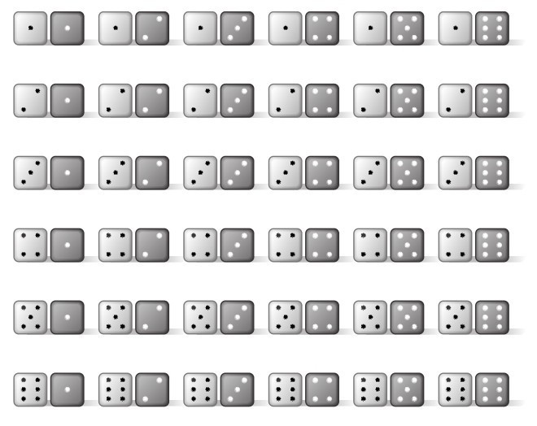
图9-1 掷一对色子，可能得到的所有结果
相反，在36个可能的结果中，有35个不是一对6。所以，没有掷出一对6的概率是35/36。你也可以不列举出35个例子，而是从完整的集合中减去掷出一对6的情况。在这个例子中就是，1-1/36=35/36。因此，某件事没有发生的概率是1减去这件事情发生的概率。
色子赌桌相当于早期的角子机，赌徒们把赌注押在掷色子的结果上。一种经典的赌博游戏是掷出4个色子，押注至少有一个6出现的可能性。对于任何愿意在这件事上押钱的人来说，这可以让你获得一些额外的收入，而且我们也有足够的数学知识来理解为什么会这样：
第一步：用4个色子掷出至少一个6的概率等于1减去4个色子中没有一个色子出现6的概率。
第二步：一个色子没有掷出6的概率是5/6，因此如果有4个色子，都没有掷出6的概率就是5/6×5/6×5/6×5/6=625/1296，也就是0.482。
第三步：所以，掷出至少一个6的概率是1-0.482=0.518。
概率为0.518意味着，如果你连续1000次每次掷4个色子，得到至少一个6的情况大约会发生518次，而没有6的情况大约有482次。如果你押注至少会出现一个6，平均而言你赢的次数会比输的次数要多，所以你最终能从中获利。
17世纪作家舍瓦利耶·德梅雷（Chevalier de Méré）坐在赌桌前的频率，和他身处巴黎最时髦的沙龙里的频率一样。德梅雷对掷色子的数学原理和赢钱都很感兴趣。虽然他提出了一些关于赌博的问题，但是他凭自己的能力无法回答。因此，1654年，他找到了著名数学家布莱兹·帕斯卡。帕斯卡对概率的调查成为一个引发了对随机性的研究的随机事件。
布莱兹·帕斯卡在遇到德梅雷的问题时才31岁，但他在学术界的名声已经流传了近20年。帕斯卡幼年时就表现出了惊人的天赋，13岁时，他的父亲让他参加了素数爱好者马兰·梅森修士组织的科学沙龙，梅森的沙龙聚集了许多著名数学家，包括勒内·笛卡儿和皮埃尔·德·费马。帕斯卡在十几岁时就证明了几何学中的重要定理，并发明了一种早期的机械计算器，也叫“加法器”（Pascaline）。
德梅雷问帕斯卡的第一个问题与“两个6”有关。我们在前面看到，当你掷两个色子的时候，有1/36的机会能得到两个6。掷色子的次数越多，获得两个6的机会就越大。德梅雷想知道他需要把一对色子掷多少次，才更有可能出现两个6。
德梅雷的第二个问题更复杂。假设让和雅克正在玩一个色子游戏，游戏包括几个回合，每个回合两人都掷出色子，看谁得到的数字最大，率先赢得三个回合的人获胜。在三个回合之后，游戏因意外需要终止。最直接的赢家是掷出了三次最大的数字的人。每个人的赌注是32法郎，所以赌注总额是64法郎。但如果让掷了两次最大的数，而雅克掷了一次，应该如何分配赌注？
帕斯卡思索着答案，他觉得有必要找一位天才的同行来讨论这些问题，于是他写信给梅森沙龙的老朋友皮埃尔·德·费马。费马住在远离巴黎的图卢兹，这座城市的名字似乎很适合一位分析赌博问题的研究者居住 [2] 。费马比帕斯卡年长22岁，他在当地刑事法院当法官，把数学作为一种智力娱乐。然而，他的业余思考使他成为17世纪上半叶最受尊敬的数学家之一。
帕斯卡和费马关于概率（他们称之为“偶然性”）的短暂通信成为科学史上的一座里程碑。他们解决了那些享乐主义者的问题，也为现代概率论奠定了基础。
现在来回答德梅雷的问题：你需要把一对色子掷几次，才更有可能出现两个6？当你一次掷两个色子时，出现两个6的概率是1/36，约等于0.028。把两个色子掷两次，至少有一次出现两个6的概率是1减去两次掷色子都没出现两个6的概率，也就是1-（35/36×35/36）。结果是71/1296，约等于0.055。（注意，两次掷色子至少出现一次两个6的概率并不是1/36×1/36。这是两次掷色子都得到两个6的概率。我们关心的概率是至少一次掷出两个6的概率，其中包括第一次掷出两个6、第二次掷出两个6，和两次都掷出两个6的结果。赌徒只需要一次掷出两个6就赢了，而不需要两次都掷出两个6。）两个色子掷三次，至少一次得到两个6的概率是1减去一次都没有出现两个6的概率，这次是1-（35/36×35/36×35/36）=3781/46656，也就是0.081。我们可以看到，掷色子的次数越多，掷出一对6的概率越高：一次是0.028，二次是0.055，三次是0.081。因此，最初的问题可以重新表述为“这个数在多少次之后会超过0.5？”，因为概率超过一半意味着事件发生的可能性比不发生更大。帕斯卡正确计算出答案是25次。如果德梅雷赌的是掷24次会出现一对6，那他可能会赔钱，但超过25次投掷后，概率就会变得对他有利，他可能会赢。
德梅雷的第二个问题是有关分钱的问题，它通常被称为“点数问题”，在费马和帕斯卡解决它之前就被提出过，但从来没有谁正确地解答过。让我们用掷硬币的例子来阐述这个问题。如果硬币落在正面，让赢得这一回合；如果硬币落在反面，则是雅克赢。第一个赢得三个回合的人可获得64英镑。当让赢了两次，雅克赢了一次后，比赛进行不下去了。如果是这样的话，最公平的分钱方法是什么？一种答案是，让应该拿走赌注，因为他领先了，但这样并没有考虑到雅克仍然有获胜的机会。另一种答案是，让拿到的赌注应该是雅克的两倍，但这也不公平，因为2比1的分数只反映了过去的事件，它并不能说明未来会发生什么。让并没有比雅克更擅长猜硬币。每次投掷时，硬币正面或反面落地的概率比都为50：50。最公平、最佳的分析是考虑未来可能发生的事情。如果再掷两次硬币，可能的结果是：
正，正
正，反
反，正
反，反
在这两次掷硬币后，比赛的胜负就分出了。前三种情况是让赢了，第四种情况是雅克赢了。最公平的分配方法是分给让3/4，给雅克1/4，也就是让得到48法郎，雅克得到16法郎。现在看来，这似乎相当直观，但在17世纪，用数学方法处理尚未发生的随机事件，是一个重大的概念突破。从物理到金融，从医学到市场研究，这个概念是我们用科学理解现代世界的基础。
在帕斯卡第一次写信给费马讨论赌徒的问题几个月后，他有了一次深刻的宗教经历，他把自己出神的状态记录在一张纸上，然后放在一个缝在夹克里的特殊口袋里，余生一直把它带在身上。起因可能是他经历了一次接近死亡的事故，拉马车的马在桥上越过了栏杆，马车悬在桥边差点儿掉下去，也可能是他对革命前法国的赌桌上的堕落的一种道德反应。无论如何，这让他恢复了对詹森主义的信仰，这是一种严格的天主教信仰。他放弃了数学，转而投身神学和哲学。
尽管如此，帕斯卡还是会用数学的方法思考。他对哲学最著名的贡献是参与关于一个人是否应该相信上帝的争论，那是他与费马早年讨论分析偶然性的新方法的一种延续。
简单来说，期望值就是你从一场赌博中能期待得到的值。例如，德梅雷押注10英镑，赌在掷四个色子时得到至少一个6，他能期待赢得多少呢？假设如果有6，他就会赢10英镑，而如果没有6，他就输掉了所有赌注。我们知道赢得这场赌博的机会是0.518。所以，他赢10英镑的可能性是一半多一点儿，而输10英镑的可能性不到一半。期望值的计算方法是将每种结果的概率乘以每种结果的值，然后再将它们相加。在这种情况下，德梅雷可能会赢：
（赢得10英镑的概率）×10英镑+（输掉10英镑的概率）×（-10英镑）
也就是，
0.518×10+0.482×（-10）=5.18-4.82=0.36英镑=36便士
（在这个等式里，赢钱用正数表示，输钱用负数表示。）当然，德梅雷不会在任何一次赌局中真的赢得36便士，他要么是赢10英镑，要么是输10英镑。36便士这个数值是理论上的，但平均而言，如果他一直赌下去，那他赢得的钱会接近每次36便士。
帕斯卡是最早应用期望值这一概念的思想家之一。不过，他脑子里的想法要比赌桌上赢钱高尚得多。他想知道打赌上帝是否存在是不是值得。
帕斯卡写道，想象一下打赌上帝是否存在。根据他的说法，下注的期望值可以通过以下公式计算：
（上帝存在的概率）×（如果他存在，你会赢得什么）+（上帝不存在的概率）×（如果他不存在，你会赢得什么）
因此，假设上帝存在的概率是50：50，也就是说，上帝存在的概率是1/2。如果你相信上帝，你会期望得到什么呢？公式就变成了：
（1/2×永恒的幸福）+（1/2×没有任何东西）=永恒的幸福
换言之，押上帝存在是一个很好的选择，因为回报非常高。计算过程没问题，因为“无”的一半是“无”，而无穷大的一半也是无穷大。同样，如果上帝存在的概率只有百分之一，那么公式就是：
（1/100×永恒的幸福）+（99/100×没有任何东西）=永恒的幸福
在这种情况下，相信上帝存在的回报同样惊人，因为百分之一的无穷大仍然是无穷大。因此，无论上帝存在的概率有多小，只要不是零，你相信上帝，就将带来无穷的回报。我们选择了一条复杂的路，得出了一个非常明显的结论。基督徒毫无疑问会选择相信上帝的存在。
帕斯卡更关心的是，如果一个人不相信上帝会怎么样。在这种情况下，打赌上帝是否存在是一次有利的赌博吗？如果我们假设上帝不存在的概率是50：50，等式现在就是：
（1/2×永恒的诅咒）+（1/2×什么都没有）=永恒的诅咒
预期的结果就变成了永恒的地狱，这看起来像是一场可怕的赌博。也就是说，如果上帝存在的概率只有百分之一，那么对于不相信上帝的人来说，这个等式同样毫无希望。如果上帝有任何存在的可能，不相信上帝的人在赌博中的期望值就会是无穷无尽的厄运。
上述论证被称为“帕斯卡的赌注”。它可以总结如下：哪怕上帝存在的可能性极小，相信上帝也是绝对值得的。因为如果上帝不存在，不信上帝的人也没有什么可失去的，但如果上帝真的存在，不信上帝的人则会失去一切。这是个非常容易的决定：你最好还是作为一个基督徒生活下去。
不过，帕斯卡的论点当然经不起仔细推敲。首先，他只考虑了基督教中的上帝。那么其他宗教的神，甚至是虚构宗教的神呢？想象一下，如果在来世，一只生干酪做成的猫将决定我们是上天堂还是下地狱。虽然这不太可能，但还是有一定可能性的。而根据帕斯卡的论证，相信这只生干酪做成的猫确实存在也是值得的，但这当然很荒谬。
帕斯卡的赌注的其他一些问题对概率的理论也具有一定的指导意义。我们说一个色子有六分之一的概率出现6的前提是，我们知道色子上有一个6。因此，“上帝存在的可能性是多少分之一”这样的说法要在数学上有意义，就必须有一个上帝确实存在的世界。换句话说，论证的前提是，上帝一定存在于某处。一个不相信上帝的人不会接受这个前提，而且它表明帕斯卡的思想是一种自证。
尽管帕斯卡的动机很虔诚，但他留下的遗产却没那么神圣，而是世俗得多。期望值是利润丰厚的博彩业的核心。一些历史学家还把轮盘赌中的轮盘的发明归功于帕斯卡。无论这是不是真的，轮盘赌肯定起源于法国，18世纪末，轮盘在巴黎受到了极大的欢迎。规则是这样的：一个球绕着外缘旋转，随后失去动量，落向内侧一个同样旋转的轮子。内轮有38个格子，用红色和黑色交替标记着数字1到36，还有绿色的特殊点0和00。球到达内轮并反弹，然后停在某一个格子里。玩家可以押注很多种结果。最简单的就是对球落入的格子下注。如果你猜对了，庄家会以35比1的赔率返还给你。也就是，10英镑的赌注可以赢得350英镑（并且归还10英镑的赌注）。
轮盘赌是一种非常有效的赚钱机器，因为每一次轮盘赌玩家的期望值都是负的。换句话说，每次赌博你都预期会输钱。有时你会赢，有时你会输，但长期来看，你最终得到的钱会比开始时的少。所以，重要的问题是，你期望损失多少？当你赌一个数字时，胜率是1/38，因为有38种潜在的结果。因此，每用10英镑赌一个号码，玩家就可以赢得：
（落在一个数上的概率）×（你会赢得什么）+（不落在这个数上的概率）×（你会赢得什么）
或者说，
1/38×350+37/38×（-10）=-0.526英镑=-52.6便士
也就是说，每下注10英镑，你就会输掉52.6便士。轮盘赌还有其他赌法，比如赌两个或两个以上数字，或者赌落入的部分、颜色或列，所有赌法最后的期望值都是-52.6便士，除了“5个数字”，也就是赌落入0、00、1、2或3，这种玩法的胜率更小，预期损失可达78.9便士。
尽管轮盘赌的胜算很低，但它一直是一种深受喜爱的娱乐活动。对于许多人来说，52.6便士是可接受的代价，这有可能让他们获得350英镑的奖金。到了19世纪，赌场数量激增，赌场为了提高自己的竞争力，制造了没有00的轮盘，使得押中一个数字的概率提高到1/37，并将预期的损失降低到每下注10英镑损失27便士。这种变化意味着输钱的速度减至一半。欧洲赌场的轮盘往往只有0，而美国更喜欢原来的风格，也就是0和00都有。
所有赌场游戏每次下注的预期收益都是负的。换句话说，在这些游戏中，赌徒应该预期自己会赔钱。如果不这样设计，赌场就会破产。然而，曾经也有赌场犯过错误。伊利诺伊州的一家河船赌场曾经推出了一项促销活动，他们改变了21点的规则，而没有意识到这种变化将期望值从负变成了正。这样，平均而言，赌徒们并不会输钱，而是每赌10美元就能赢20美分。据说赌场在一天内损失了20万美元。
赌场里最划算的赌法在双色子赌桌上。这个游戏来自一种英国色子游戏在法国的变体。玩家掷两个色子，结果取决于掷出的数字和它们的和。在双色子游戏中，你赢钱的结果占了495种可能结果中的244种，即49.2929%，每10英镑赌注的预期损失只有14.1便士。
双色子游戏还有一点同样值得一提，那就是在游戏中还能下一个奇怪的附加赌注，即你可以赌庄家赢。也就是说，你可以赌掷色子的玩家输。当下主要赌注的人输的时候时，附加赌注的下注者就赢了，反之当主要下注者赢时，附加下注者就会输。由于主要下注者平均每10英镑就会输掉14.1便士，因此附加下注者平均每10英镑下注就会赢14.1便士。但还有一个额外的规则让附加赌注的结果没有那么有利。如果主要玩家在第一次掷色子时掷出了两个6（这意味着主要玩家输了），附加下注者也不会赢，而是只能拿回他的钱。这个变化似乎微不足道：掷出两个6的概率只有1/36。然而，减少1/36的胜率，就会将每10英镑的期望收益值降低27.8便士，这就把期望值变成了负值。附加赌注的下注者每下注10英镑，会赢得14.1便士减去27.8便士，也就是-13.7便士，或者说损失13.7便士，而不会像庄家一样每10英镑能赢14.1便士。附加赌注确实是一种更好的交易，但也只好一点点，每下注10英镑大约少输0.4便士。
另一种看待预期损失的方法是从偿付率的角度来考虑。如果你在双色子游戏上赌10英镑，你可以预期得到约9.86英镑的偿付。换句话说，双色子游戏的偿付率为98.6%。欧洲轮盘赌的偿付率是97.3%，而美国轮盘赌为94.7%。虽然这对赌徒来说可能是一笔不好的交易，但比角子机要好。
1893年，《旧金山纪事报》刊登出一则消息，称这座城市里有1500个“投五美分硬币的角子机，它们的利润巨大……如雨后春笋般疯狂增长，短短几个月时间遍布各处”。这种机器一开始有很多种类型，但直到20世纪末，德国移民查尔斯·费（Charles Fey）提出了三个旋转轴的想法，现代角子机才诞生。他的独立钟 [3] 机器的旋转轴上有一个马蹄铁、一颗星、一颗心、一颗钻石、一个黑桃和一个费城破碎的独立钟的图像。不同的符号组合代表不同的奖金数额，头奖是三个钟的组合。角子机增加了其他游戏所没有的悬念，旋转轴一个接一个地停下来。其他公司纷纷效仿，这些机器很快在旧金山以外的地方传播开来，到20世纪30年代，带有三个转轴的角子机成为美国社会结构的一部分。一款早期的机器通过支付水果味口香糖来绕过游戏法的监管，这就引入了经典的甜瓜和樱桃图案，这也是为什么角子机在英国被称为“水果机”。
独立钟角子机的平均偿付率在75%，但如今的角子机比之前更加慷慨。“凭经验来说，如果是以美元为面值的（机器），大多时候会（把偿付率）定在95%。”国际游戏科技公司（IGT）的游戏设计总监安东尼·贝洛赫尔（Anthony Baerlocher）说。全球约有100万台角子机使用美元下注，而这家角子机公司生产了其中的大约六成。“如果是一台用五美分镍币下注的机器，（偿付率）大概是90%，用25美分硬币下注的机器大约是92%，如果是一美分硬币，可能会降到88%。”计算机技术让机器能接收不同面值的赌注，所以即使是同样的机器，根据赌注的大小也可能产生不同的收益率。我问他是否有一个截止比例，低于这个百分比，玩家就不会玩这台机器，因为他们输的钱太多了。“我个人认为，一旦偿付率跌到85%左右，就很难设计出一款好玩的游戏了。玩家必须得非常幸运才能赢钱，这样就没有足够的钱回馈给玩家来让他们保持兴奋。我们可以在87.5%或88%的水平上做得很好，而如果达到95%到97%的偿付率，玩家就会非常兴奋。”
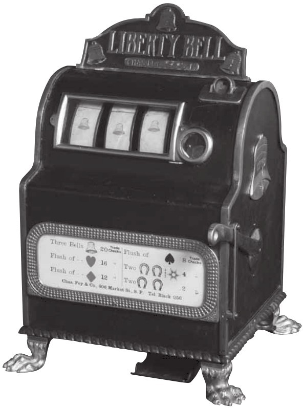
图9-2 第一台独立钟角子机只有一台收银机的大小，但它在19世纪末被制造出来后，迅速取得了成功
我和贝洛赫尔在位于里诺商业园的IGT总部见了面，那里距离佩珀米尔赌场约20分钟的车程。他带我参观了生产线，那里每年会生产出数万台角子机，我们还参观了一个堆满数百台角子机的储藏室。贝洛赫尔胡子剃得干干净净，着装举止像私立学校的毕业生，一头乌黑的短发，下巴上有个酒窝。他的家乡卡森市距离这里约半小时的车程，他在印第安纳州圣母大学获得数学学位后加入了IGT。对于一个从小就喜欢发明游戏，并在大学里发现了自己在概率方面的天赋的人来说，这份工作非常适合。
我之前写到，赌博的核心概念是期望值，但它只是一方面。另一方面则是数学家口中的大数定律。如果你只在轮盘赌或角子机上赌几次，你可能会赢钱。然而，你玩轮盘赌的次数越多，就越有可能输钱。只有从长远角度看，偿付率才是正确的。
大数定律说的是，如果掷三次硬币，可能根本不会出现正面，但是掷30亿次，你可以相当肯定，出现正面的次数几乎占50%。在第二次世界大战期间，数学家约翰·克里奇（John Kerrich）在丹麦访问时被德国人逮捕并拘留。他决定利用这段时间测试大数定律，于是他在牢房里掷了10000次硬币。结果是5067次正面，占总数的50.67%。1900年前后，统计学家卡尔·皮尔逊（Karl Pearson）掷了24000次。可以想象随着次数增多，正面比例会更接近50%，事实也确实如此。他掷出了12012次正面，占50.05%。
上面提到的结果似乎证实了我们认为正确的事情：掷硬币时，得到正面和反面的可能性相同。然而，一个由斯坦福大学统计学家佩尔西·迪亚科尼斯（Persi Diaconis）领导的团队近期调查了正面出现的可能性是否真的和反面相同。团队制造了一台掷硬币的机器，并对空中旋转的硬币进行慢动作摄影。经过数页纸的分析，包括估计约每6000次投掷中有1次硬币会立起来，迪亚科尼斯的分析似乎指向一种令人着迷和惊讶的结果。事实上，硬币落在它抛出时的那一面的概率大约是51%。因此，如果一枚硬币正面朝上掷出，它正面落地的概率会比反面稍高。不过，迪亚科尼斯总结说，他的研究真正证明的是，研究随机现象是多么困难，而“对掷硬币来说，1/2概率的经典假设相当可靠”。
赌场与大数密切相关。贝洛赫尔解释道：“（赌场）不只拥有一台机器，而是希望拥有数千台，因为他们知道，一旦机器够多，即使一台机器是我们所说的‘倒置’，也就是亏损的，一大群机器的总数也很有可能得到正的收益”。IGT的角子机的设计标准是在1000万次游戏后，在0.5%的误差范围内达到偿付率。我在里诺的时候住在佩珀米尔赌场，每台机器每天大约会运行2000次。赌场有近2000台机器，因此每天可以赌约400万场。两天半的时间内，佩珀米尔赌场几乎可以确定能达到偿付率，误差在0.5%以内。如果平均下注金额是一美元，且百分比设定成95%，每60小时就有500000美元的利润，误差在50000美元左右。因此，赌场越来越青睐角子机也就不足为奇了。
轮盘赌和双色子的规则自从几百年前被发明以来就没有变过。相比之下，贝洛赫尔在工作之中的一部分乐趣在于，他可以为IGT引入市场的每台新角子机设计出新的概率集。首先，他可以决定在转轴上使用什么符号。传统的符号是樱桃和木条，但现在它们也可能是卡通人物、文艺复兴时期的画家或者动物。然后，他会计算出这些符号在转轴上出现的频率、哪些组合会给玩家付钱以及每个组合机器会付多少钱。
贝洛赫尔给我介绍了一个简单的游戏（见下页表），游戏A有三个转轴，每个转轴上有82个位置，不同位置上画着樱桃、条（BAR）、红色的7、一个头奖，也有的是空白。如果你看了这张表，你会发现第一个转轴有9/82（也就是10.976%）的概率出现樱桃，当这种情况发生时，1美元赌注可以赢得4美元。一个获胜的组合的概率乘以赢得的钱被称为预期贡献。“樱桃-任何图案-任何图案”这种组合的预期贡献是4×10.967%=43.902%。也就是说，每投入一美元，“樱桃-任何图案-任何图案”的组合将支付43.902美分。在设计游戏时，贝洛赫尔需要确保所有组合的预期贡献总和等于整个机器的预期偿付百分比。
游戏A：低波动性
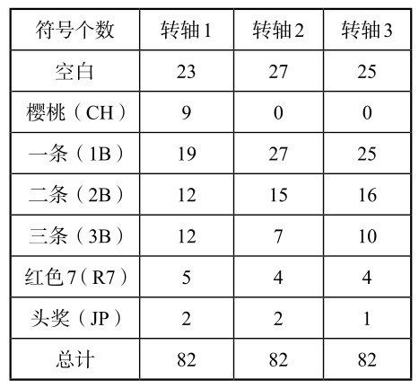
游戏B：高波动性
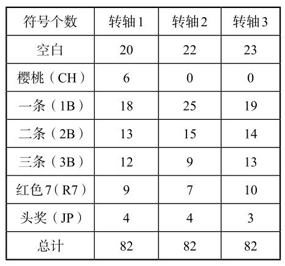
游戏A 奖金记分牌
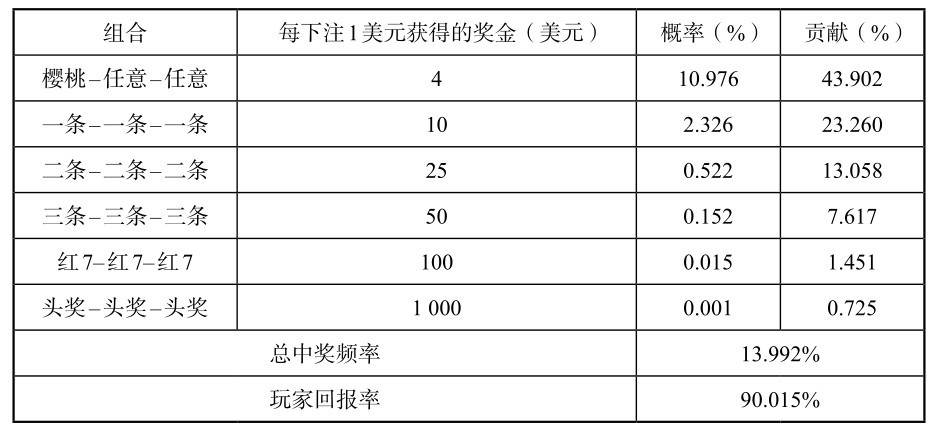
游戏B 奖金记分牌
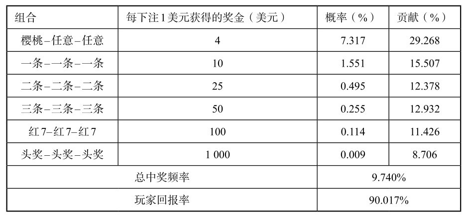
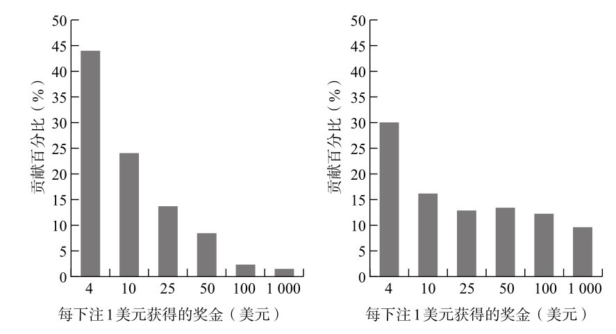
图9-3 两种游戏不同奖金的预期贡献
角子机设计的灵活性在于，你可以改变符号、获胜的组合和奖金，从而大幅改变游戏的特点。游戏A是一个“樱桃运送机”，这种机器会经常付出奖金，但金额都很小。几乎一半的奖金都以4美元为单位。相比之下，在游戏B中，只有三分之一的奖金是4美元，剩下更多的钱都是数额更大的奖金。游戏A是所谓的低波动性游戏，而游戏B是高波动性游戏，这意味着你赢得奖金的组合次数更少，但赢得更大一笔奖金的机会更大。波动性越高，角子机经营者的短期风险就越大。
一些赌徒喜欢低波动性的角子机，而另一些则喜欢高波动性的游戏。游戏设计师的主要职责是，确保游戏能为玩家带来足够的奖金，足以让玩家继续玩下去，因为平均来说，玩得越多，输得越多。高波动性会产生更大的刺激，尤其是在赌场里，机器中头奖时会有令人激动的声光效果来吸引注意。然而，设计一个好的游戏，不仅在于复杂的图案、丰富的声音和有娱乐性的视频情节，还要保证潜在的概率恰到好处。我问贝洛赫尔，通过改变波动性，是否有可能设计出一个低偿付率的机器，让它比偿付率更高的机器更吸引玩家。“我和同事花了一年多时间想弄清楚，写下了一些公式，想出了一种方法来隐藏真实的偿付率。”他说，“我们听一些赌场说，他们运营着一些偿付率较低的机器，而玩家不会注意到这件事。这是一项巨大的挑战。”
我问，这是不是有点儿不道德。
“这是必要的。”他回答道，“我们希望玩家仍可以享受游戏，但我们需要确保客户能赚到钱。”
贝洛赫尔的奖金列表不仅有助于理解角子机的内部构造，也能解释保险业的运作。保险很像玩角子机，两者都是建立在概率论基础上的系统，且几乎所有人输的钱都会被用来支付少数人的奖金（保险金）。而对于控制收益率的人来说，这两者都有利可图。
买保险和赌博没什么区别。例如，你赌你的房子有可能被偷窃。如果你的房子被盗，你会得到一笔赔款，这是对被盗物品的补偿。如果你的房子没有被盗，你什么也得不到。保险公司精算师做的事情和IGT的安东尼·贝洛赫尔一模一样。他知道总体而言他想给客户赔付多少钱。他知道每种赔付事件（入室盗窃、火灾、重病等）的概率，因此他计算出每个事件的赔付金额，让预期贡献的总和等于赔付总额。尽管编写保险表比设计角子机游戏要复杂得多，但原理是一样的。由于保险公司支付的赔付金低于他们收到的保险费，他们的赔付比例低于100%。购买保险是一种负预期的赌博，因此，它并不是一种好的赌博游戏。
可是，如果这是一笔糟糕的交易，人们为什么还要购买保险呢？买保险和在赌场里赌博的区别在于，在赌场里，你是用你能承受得起的钱赌博（希望如此）。然而，买保险是在通过赌博来保护一些你无法承担的损失。虽然你不可避免地会损失少量的钱（也就是保险费），但这可以防止你损失一大笔钱（例如，你房子里东西的价值）。保险提供了一个很好的价格，换取你的安心。
但是，为非灾难性的损失投保则毫无意义。一个例子是为手机的丢失投保。手机相对便宜（大约100英镑），但手机保险很贵（比如每月7英镑）。一般来说，你不买保险反而更好，丢了手机，再买一部新的就是了。你这样是在“自我保险”，把保险公司的利润率留给了自己。
最近角子机市场增长的一个原因是引进了“渐进式”机器，这与开明的社会政策没有多大关系，主要与一夜暴富的梦想有关。渐进式角子机的头奖比其他机器要高，因为它们都被连接在一个网络中，每台机器会贡献出一个百分比的钱用来发头奖，这个百分比的值会逐渐变大。在佩珀米尔赌场里，我看着一排排连接在一起的机器，这些机器提供了数万美元的奖金。
渐进式机器具有很高的波动性，这意味着在短期内赌场可能会损失一大笔钱。“如果我们推出一个渐进式头奖的游戏，大约每20位（赌场老板）中就会有一位给我们写信，认为我们的游戏搞错了。因为游戏在第一周里就出了两三次大奖，亏损达10000美元。”贝洛赫尔说。那些试图从概率中获利的人，仍然无法在最基础的层面上理解概率，贝洛赫尔认为这件事很讽刺。“我们会做一项分析，看看它发生的概率，假设是200比1。分析结果表明只有0.5%的概率会发生，那它一定会发生在某人身上。我们告诉他们，克服困难，这很正常。”
IGT最受欢迎的渐进式角子机是“百万美元”（Megabucks），它将内华达州数百台机器连接了起来。10年前，当公司推出游戏时，最低头奖奖金是100万美元。起初，赌场不想承担这么多的奖金，所以IGT承包了一定比例的机器来为整个网络提供担保，并自行支付头奖。尽管IGT支付了数亿美元的奖金，但它从未在“百万美元”上遭受损失。大数定律绝对是可靠的：数字越大，现实情况越符合它的预测。
“百万美元”现在的头奖为1000万美元打底。如果当头奖达到约2000万美元的时候还没有人中奖的话，赌场里的“百万美元”角子机前会排起长队，IGT就会收到分发更多机器的请求。“人们认为它已经过了通常的中奖时间点，所以很快就会有人中奖。”贝洛赫尔解释道。
然而，这种推理是错误的。在角子机上的每次游戏都是随机事件。无论头奖金额是10美元、20美元还是1亿美元，你获胜的可能性都一样，但你会本能地感觉，在长时间扣住钱之后，这些机器会更有可能付出奖金。认为头奖“该发出来了”的想法被称为赌徒谬误。
赌徒谬误是人类的一种非常强烈的欲望。角子机以其特有的“毒性”利用了它，成为所有赌场游戏中可能最容易让人上瘾的一个。如果你接连玩了很多局游戏，在经历了长期的失败之后，你会自然而然地想：“我下次一定会赢。”赌徒通常说机器“热”或“冷”，意思是它给出的奖金很多或很少。再次重申，这完全是一派胡言，因为概率一直是一样的。不过，我们可以理解，为什么人们会给这些人形大小，由塑料和金属拼凑起来，通常被称为“独臂强盗”的机器赋予个性。玩角子机是一种紧张而亲密的体验，你可以靠得很近，用指尖轻敲机器，而整个世界的其余部分都被隔绝在外。
我们的大脑不善于理解随机性，所以概率是数学中最充满悖论和惊喜的分支。我们会本能地赋予情境一些模式，即使我们知道其实不存在任何模式。人们总是对认为在连败之后更有可能得到奖金的角子机玩家不屑一顾，然而，赌徒谬误的心理也存在于非赌徒身上。
考虑下面这个聚会游戏。选两个人，让其中一个人掷硬币30次，并记下正面和反面的顺序。另一个人想象掷30次硬币，然后写下他想象到的正面和反面结果的顺序。两位玩家将自行决定谁扮演哪个角色，然后展示他们的两份结果，但你对两位玩家的选择不知情。我要求我的母亲和继父这样做，并得到了以下信息（H表示正面，T表示反面）：
结果1
HTTHTHTTTHHTHHTHHHHTHTTHTHTTHH
结果2
TTHHTTTTTHHTTTHTTHTHHHHTHHTHTH
这个游戏的重点在于，很容易发现哪个结果来自真实的掷硬币，哪个来自想象中的。在上面的例子中，我很清楚第二个结果是真实的，确实是这样。首先，我看了连续正面或反面的最多次数。第二个结果最多有5次连续反面，而第一个结果最多只有4次正面。掷30次出现连续5次正面或反面的概率几乎是三分之二，所以它比掷30次而没有连续5次正面或反面的概率要大得多。第二个结果可能是真实掷硬币结果。而且，我知道大多数人都不会想象掷30次中有连续5次正/反面，因为这看起来太刻意了，而不像是随机的。但为了确定第二个结果是真的掷硬币，我研究了两个结果在正面和反面之间的变化频率。由于每次抛硬币时，正面和反面的概率是相等的，所以平均而言，大约一半的时间里，每个结果后面都跟着不同的结果，而另一半的时间里后一个结果与前一个相同。第二个结果交替了15次，第一个结果则交替了19次，这就表明第一个结果可能是人为干预的。在想象掷硬币时，相比于真实的随机序列的结果，我们的大脑更倾向于频繁地改变结果，在出现两个正面后，我们的本能是补偿，也就是想象出现反面的结果，即使出现正面的可能性是相同的。在这里，赌徒谬误就出现了。真正的随机性其实不会在乎以前发生过什么。
人类的大脑很难伪造随机性，甚至可以说完全不可能。而我们在面对随机时，也经常将其解释为非随机。例如，iPod音乐播放器上的随机播放功能是按随机顺序播放歌曲。但当苹果刚推出这项功能时，用户却反映说它偏爱某些乐队，因为同一乐队的曲目常常一个接一个地播放。听众正是陷入了赌徒谬误的陷阱。如果iPod随机播放真的是随机的，那么每首新歌的选择都与之前的选择无关。正如投币实验所显示的，反直觉的连续播放其实是常态。如果歌曲是随机选择的，那么很有可能同一位艺术家的歌曲会聚集在一起播放。苹果前首席执行官史蒂夫·乔布斯在回应用户的抗议时说：“我们正在减少（随机播放的）随机性，让它感觉更加随机。”他说这句话是认真的。
为什么人类如此容易掉入赌徒谬误的陷阱？一切都是为了控制。我们喜欢控制自己的环境，如果事件是随机发生的，我们会觉得我们无法控制它们。相反，如果我们能控制事件的发生，它们就不是随机的。这就是为什么我们喜欢在没有模式的时候寻找模式，因为我们试图挽回一种控制感。人类需要控制是一种根深蒂固的生存本能。20世纪70年代，一个有趣（也可以说是残酷）的实验检验了控制感对养老院中的老年病人的重要性。有些病人可以选择房间如何布置，也可以选择一种植物来照料。其他人只是被告知他们的房间将是什么样子，工作人员替他们选择了一种植物让他们照顾。18个月后，结果十分惊人：能控制自己房间的病人的死亡率是15%，而没有控制权的病人的死亡率是30%。控制的感觉可以让我们活下去。
随机性并不是均匀分布的。它会产生空白区域和重叠区域。
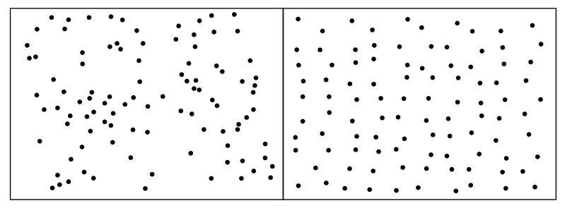
图9-4 左图为随机分布的点，右图为非随机分布的点
随机性可以解释为什么一些小村庄的出生缺陷率高于正常水平，为什么某些道路更多发事故，以及为什么在某些比赛中篮球运动员似乎每次罚球都能得分。它也可以解释为什么在2006年之前的10届足球世界杯决赛中，有7届比赛双方至少有两名球员生日相同：
2006年：帕特里克·维埃拉、齐内丁·齐达内（法国）——6月23日
2002年：无
1998年：埃马纽埃尔·佩蒂特（法国）、罗纳尔多（巴西）——9月22日
1994年：弗朗哥·巴雷西（意大利）、克劳迪奥·塔法雷尔（巴西）——5月8日
1990年：无
1986年：塞尔吉奥·巴蒂斯塔（阿根廷）、安德烈亚斯·布雷默（联邦德国）——11月9日
1982年：无
1978年：雷内·范德克尔克霍夫和威利·范德克尔克霍夫（荷兰）——9月16日
约翰尼·雷普、扬·容布勒德（荷兰）——11月25日
1974年：约翰尼·雷普、扬·容布勒德（荷兰）——11月25日
1970年：皮亚扎（巴西）、皮耶路易吉·切拉（意大利）——2月25日
虽然乍一看这似乎是一系列惊人的巧合，但从数学上来说，这份名单并不奇怪，因为每当你随机选择23人（比如两支足球队的队员和一名裁判），其中有两人生日在同一天的概率比没有任何两个人生日相同的概率更高。这种现象被称为“生日悖论”。这个结果虽然违背了常识，因为23似乎是一个很小的数字，但并不自相矛盾。
证明生日悖论的方法类似于本章开始时介绍的掷出某些组合的色子的过程。事实上，我们可以将生日悖论重新表述成，对于一个有365面的色子，在掷23次之后，出现两次落在同一面的可能性比不出现的可能性更高。
第一步：在一组人中，有至少两个人生日相同的概率是1减去没有人生日相同的概率。
第二步：在一个二人小组中，没有人生日相同的概率是365/365×364/365。因为第一个人可以在任何一天出生（365个选择中的365个），第二个人可以在除了第一个人生日之外的任何一天出生（365个选择中的364个）。为了方便起见，我们忽略闰年中多出来的一天。
第三步：在一个三人小组中，没有人生日相同的概率是365/365×364/365×363/365。而四个人的情况就变成了365/365×364/365×363/365×362/265，以此类推。这些乘积的结果会越来越小。当包含23人时，它最终减小到0.5以下（确切数字是0.493）。
第四步：如果一组中没有人生日相同的概率小于0.5，那么至少有两个人生日相同的概率就会大于0.5。因此，在一个23人的小组中，很可能有两个人在同一天出生。
足球比赛提供了一个完美的样本组来检验事实是否符合理论，因为球场上总会有23人。但是，世界杯决赛的情况好像有点儿太符合生日悖论了。在23人中，有两个人生日相同的概率是0.507，也就是说略高于50%。而10届里出现了7届（即使不包括范德克尔克霍夫双胞胎），也已经达到了70%的命中率。
其中一部分原因是大数定律。几场决赛的样本量并不大，如果去分析每一届世界杯的每一场比赛，我非常有信心，结果将更接近50.7%。但是这里还有另一个变量。足球运动员的生日在一年中是平均分布的吗？或许并不是。研究表明，足球运动员更有可能在一年中的某段时间里出生，在学年截止点之后不久出生的更多，因为他们将是所在学年中年龄最大的，可能更擅长体育。如果出生日期的分布存在偏差，我们可以预期出现相同生日的概率会更高。而偏差经常出现。例如，如今相当一部分婴儿是通过剖宫产或引导手段出生的，这往往发生在工作日（因为妇产科医护人员不喜欢在周末工作），结果就是，分娩在全年时间中不呈随机分布模式。如果你选取在同一个12个月的周期里出生的23人（比如一间小学教室里的学生），有两个学生生日相同的概率将大大超过50.7%。
如果你没法立即找到一个23人的小组来进行检验，那就想想你的直系亲属。在4个人中，有两个人在同一个月过生日的概率为70%。而只需要7个人，就有可能出现其中两人的生日在同一周里；在一个14人的小组中，有两人生日相同的可能性正好是一半。随着群体规模越来越大，概率上升得越快。在35人里，至少两人生日相同的概率是85%；而在60人中，这个概率超过了99%。
关于生日，还有另一个问题：需要有多少人才能使有人和你的生日在同一天的概率超过50%？它的答案和生日悖论一样反直觉。这个问题与生日悖论不同，因为我们指定了一个日期。在生日悖论中，我们不在乎谁和谁的生日在同一天，只要有两个人生日相同就可以。而我们的新问题则可以重新表述成，给定一个确定的日期，我们需要掷多少次这个365面的色子，它才会落在这个日期上？答案是253次！换句话说，你需要召集253人，其中至少一个人和你的生日在同一天的概率才大于一半。这似乎是个非常大的数字，它远远超过了1和365之间的半数。然而，随机性还是会把人们的生日聚集在一起，之所以需要这么多人，是因为他们的生日并没有以有序的方式分布在各个日期上。在这253个人中，可能会有很多人生日相同，但不是和你相同，你需要考虑到这些。
生日悖论的一个教训是，巧合比你想象的更常见。德国彩票和英国国家彩票差不多，每个数字组合的中奖概率是1400万分之一。然而在1995年和1986年，有两次大奖的组合是一样的：15-25-27-30-42-48。这是个惊人的巧合吗？其实不算，这种事情经常会发生。在两次中奖组合出现之间的时间，彩票会开奖3016次。要计算有两次大奖是同一个组合所需的开奖次数，相当于计算3016个人的生日相同的机会，其中每个人的生日有1400万种可能性。这个概率是0.28。也就是说，在这段时间里，有两个中奖组合完全相同的可能性超过25%。因此，“巧合”并不是一种非常奇怪的巧合。
更令人困扰的是，对巧合的误解导致了几次法庭上的判决错误。在1964年加州一个著名的案件中，抢劫案的目击者报告说看到一个扎着马尾辫的金发女人、一个留着胡子的黑人和一辆黄色的私家车。一对符合描述的夫妇被捕并被起诉。检察官通过将每个细节发生的概率（一辆黄色的汽车是1/10，一个金发女性是1/3，等等）相乘，计算出这对夫妇存在的概率是1200万分之一。换句话说，每1200万人中，平均只有一对夫妇准确地符合描述。他认为，被捕的夫妇有罪的可能性非常大。于是，这对夫妇被定罪了。
但是，检察官的计算是错误的。他计算出的是随机挑选一对夫妇，刚好符合证人证词的概率。真正的问题应该是，如果有一对夫妇符合描述，被捕的夫妇有罪的可能性有多大？这种可能性只有约40%。也就是说，被捕的夫妇符合描述很可能只是一个巧合。1968年，加利福尼亚州最高法院撤销了这一判决。
让我们回到赌博的世界。在另一个彩票的案例中，新泽西州的一位女性在1985年到1986年间的4个月里，中了该州的两次彩票。在普遍的报道里，这种情况发生的概率是17万亿分之一。然而，尽管在两期彩票中各购买一张并同时中奖的概率确实是17万亿分之一，但这并不意味着有人在某个地方中两次彩票的概率也是如此之小。事实上，后一种情况是很有可能的。普渡大学的斯蒂芬·塞缪尔斯（Stephen Samuels）和乔治·麦凯布（George McCabe）计算出，在7年的时间里，有人两次中奖美国彩票的概率要高于50%。即使是在4个月的时间里，在一些国家，有人两次中奖的概率也超过了1/30。佩尔西·迪亚科尼斯和弗雷德里克·莫斯泰勒称之为极大数定律：“有足够大的样本，任何反常的事情都会很容易发生。”
从数学的角度看，彩票是迄今为止最糟糕的一类合法赌博。即使是最吝啬的角子机也有约85%的偿付率。相比之下，英国国家彩票的偿付率仅有约50%。彩票不会给组织者带来任何风险，因为奖金只是收入的再分配。或者对英国国家彩票来说，奖金是一半的收入的再分配。
但是，在极少数情况下，彩票可能是最好的选择。由于滚存 [4] 大奖的存在，有时奖金已经增长到大于购买每种可能的数字组合的成本。在这些情况下，你买了所有结果，就可以保证其中包含获胜的组合。这里的风险只是，可能还有其他人也买到了中奖的组合，那你就要与他们分享头奖了。但是，“购买每种组合”依赖于有没有这么做的能力，这在理论和操作方面有很大难度。
英国彩票是49选6，也就是说，每张彩票的投注者必须从49个数字中选择6个。一共大约有1400万种可能的组合。如何才能列出这些组合，使每种组合只出现一次，并且避免重复？20世纪60年代初，罗马尼亚经济学家斯特凡·曼德尔（Stefan Mandel）曾针对规模更小的罗马尼亚彩票问出同样的问题。答案并不简单。然而，曼德尔花了几年时间终于破解了这个难题，并在1964年中了奖。（事实上，他并没有购买每一种组合，因为那样花的钱太多了。他使用了一种被称为“简缩”的方法，保证6个数字中至少有5个是正确的。通常，5个数字正确就意味着赢得了二等奖，但他很幸运，第一次就获得了头奖。）曼德尔用来计算该购买哪些组合的算法写满了8000张大纸。不久之后，他移民到以色列，然后又去了澳大利亚。
在墨尔本的时候，曼德尔成立了一个国际博彩联合组织，从成员那里筹集足够的资金，购买所有彩票组合。他调查了世界各地的彩票，寻找那些滚存奖金达到购买所有组合的成本的三倍以上的彩票。1992年，他发现了弗吉尼亚州的彩票，这种彩票包含700万种组合，每张彩票1美元，而奖金已经达到了近2800万美元。于是，曼德尔开始行动了。他在澳大利亚打印了票券，通过电脑填写，涵盖了700万种组合，然后将票券邮寄到美国。他不但获得了头奖，还有13.5万个二等奖。
弗吉尼亚州彩票是曼德尔赢得的最大一笔头奖，他在离开罗马尼亚后中了13次奖。美国国家税务局、联邦调查局和中央情报局都对博彩组织在弗吉尼亚州的中奖进行了调查，但找不到任何不当行为。购买每种组合并不违法，尽管它听起来像个骗局。曼德尔已经从彩票事业退休了，住在南太平洋的一个热带岛屿上。
1888年，约翰·维恩（John Venn）发明了一种尤为有效的方法，将随机性可视化。维恩也许是有史以来最低调的数学家，但他的名字家喻户晓。作为剑桥大学的教授和英国圣公会教士，他在晚年花了大量时间为剑桥大学1900年前的13.6万名校友编撰了个人信息。尽管他没有扩展学科的边界，但他确实发展出了一种有效的方式，用交叉的圆来解释逻辑论证。尽管莱布尼茨和欧拉在前几个世纪都做过非常类似的事情，但这些图表还是以维恩的名字命名。更鲜为人知的是，维恩想出了一个同样吸引人的方式来解释随机性。
想象在空白页的中间有一个点。从这个点开始，有8个可能的方向可以去，包括北、东北、东、东南、南、西南、西和西北。将数字0到7分配给每个方向。从0到7随机选择一个数字，然后沿着相应的方向画一条线。不断重复这个过程，就创造出了一条路径。维恩选择了一个最不可预测的数列，也就是π的小数展开（从1415开始，不包括8和9）。他写道，结果得到了“一个非常恰当的随机图形”。
维恩的图画被认为是有史以来第一幅“随机游走”的图示（见图9-5）。随机游走常被称为“醉汉走路”，因为这幅图有一种更有趣的想象方式，那就是把最初的点想象成一根路灯柱，而画出的路径是一位醉汉在摇摇晃晃地走路。其中一个最明显的问题是，醉汉在倒下之前能从原点走出多远？平均来说，他走的时间越长，就会走得越远。事实证明，他行走的距离与行走时间的平方根成比例。所以平均而言，如果他在一个小时内在距离灯柱一个街区的地方倒下，那么他走两个街区需要4个小时，而走三个街区则需要9个小时。
醉汉任意行走时，有时会绕圈子，有时会自行原路返回。醉汉最终走回灯柱的可能性有多大？令人惊讶的是，答案是100%。他可能会在最偏僻的地方浪迹多年，但可以肯定的是，只要有足够的时间，醉汉最终会回到原点。
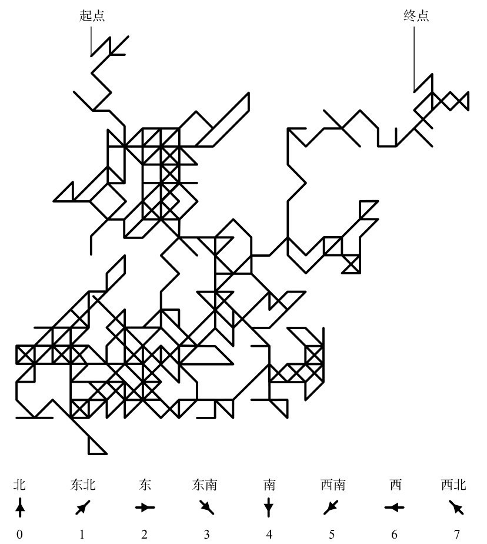
图9-5 有史以来第一个随机游走的例子出现在约翰·维恩的《机会的逻辑》第三版（1888）中。行走方向的规则遵循π的小数点后出现的数位（0~7）
想象一个醉汉在三维空间里行走，就像一只迷路的蜜蜂在嗡嗡地飞。蜜蜂从空中的一个点开始，随机往任意方向沿直线飞行一段固定的距离。蜜蜂停下来，小憩一会儿，然后随机地往另一个方向飞行相同距离，以此类推。蜜蜂最终飞回它开始的地方的可能性有多大？答案只有0.34，约三分之一。在二维平面上，一个醉汉一定能走回灯柱，这看起来很奇怪，但看起来更奇怪的是，一只蜜蜂很有可能永远飞回不了家。
在卢克·莱恩哈特（Luke Rhinehart）的畅销小说《骰子人生》（The Dice Man）中，主人公用掷色子来决定人生。想象有一个人用掷硬币来做决定。比方说，如果他掷出正面，就会向上移动一步；如果他掷出反面，则向下移动一步。掷硬币的人的路径就像一个醉汉在一维空间中行走，他只能沿着同一条线上下移动。按照第376页第二行的30次掷硬币结果画出行走的轨迹，将得到图9-6。
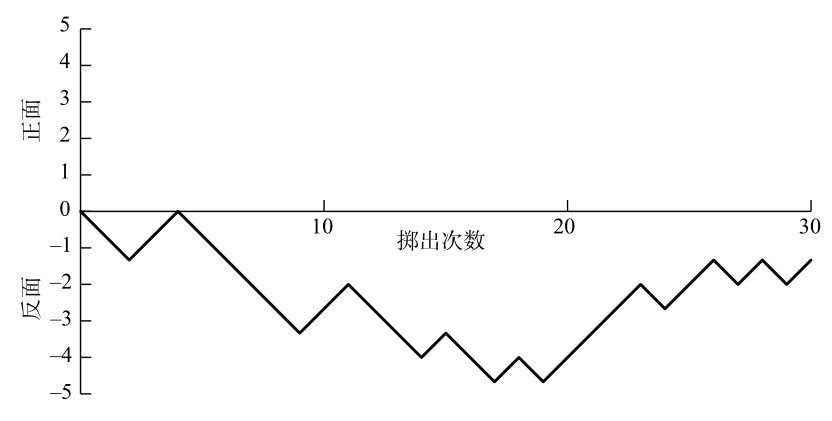
图9-6 用掷硬币结果决定的行走轨迹
这条路径是一条呈锯齿状的线，有高峰有低谷。如果掷硬币的次数越来越多，这根线延伸得越来越长，就会出现一种趋势。这条线会上下浮动，并且幅度越来越大。掷硬币的人在两个方向上都离起始点越来越远。图9-7是我根据6个掷硬币的人的结果画出的路径，每人掷出100次。
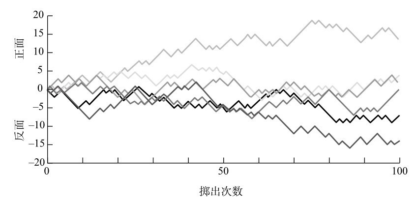
图9-7 根据100次掷硬币结果画出的路径
如果我们假设在某个方向上，跟起点有一定距离的位置有一个障碍物，掷硬币的人撞上这个障碍物的概率最终会是100%。当我们分析赌博模式时，这种碰撞的必然性很有指导意义。
假设掷硬币的人的随机游走描述的不是一段现实的旅程，而是代表银行账户里的钱，让掷硬币变成一场赌博，正面表示赢100英镑，反面则表示输100英镑，他的银行账户里的钱将上下波动，幅度越来越大。我们假设，阻止掷硬币的人继续玩下去的唯一障碍是他账户里的钱只剩0英镑。那我们就知道这一定会出现。换句话说，他一定会破产。这种现象被人们形象地称为赌徒破产原则，也就是说，最终的结局必然是贫穷。
当然，没有哪个赌场的游戏比掷硬币更慷慨（偿付率是100%）。如果输的概率大于赢的概率，随机游走的地图就会向下移动，而不是沿着水平轴延伸。换句话说，破产的速度更快。
随机游走解释了为什么赌博对富人有利。富人不仅需要更长的时间才会破产，而且还有更多的机会，让随机游走偶尔向上延伸。然而，无论是富人还是穷人，获胜的秘诀都在于及时停止。
随机游走的数学不可避免地包含一些令人头痛的悖论。在图9-7中，掷硬币的人根据掷出结果上下走动，你可能觉得他会随机游走并有规律地横穿水平轴。硬币掷出正面和反面的概率是50：50，所以我们可能会预期他在起点的两边待的时间相同。但是事实恰恰相反。如果硬币被无限次地掷出，最有可能的结果是他并不会换边。换边一次的概率次之，然后是两次、三次，等等。
对于有限的掷出次数，仍然会出现一些非常奇怪的结果。威廉·费勒（William Feller）计算出，如果在一年内每秒掷一次硬币，那么掷硬币的人出现在图表一侧的时间超过364天10小时的概率是1/20。“很少有人相信，一枚完美的硬币会连续数百万次都不发生（边）的变化，而这正是一枚完美硬币的规律。”他在《概率论及其应用导论》中写道，“如果现代教育学家或心理学家想要描述个人掷硬币游戏的长期案例的历史，他会将大多数硬币归类为行为失调。”
尽管随机性带有的奇妙的反直觉现象让纯数学家感到兴奋，但这些特性也会诱惑那些无耻的人。缺乏对基本概率的了解，意味着你很容易被欺骗。例如，如果你被一家声称能预测婴儿性别的公司诱惑，你就陷入了一个古老的骗局。假设我成立了一家叫作“婴儿预测者”的公司，它宣布自己有一条预测婴儿性别的科学公式。“婴儿预测者”向母亲收取一定的预测费。由于人们对它的公式充满信心，加上公司的CEO（首席执行官），也就是我，非常慷慨，公司承诺如果预测结果错了，它也会全额退款。购买这个预测听起来是个不错的选择，因为要么“婴儿预测者”是正确的，要么它是错误的，而如果它预测错了，你还可以拿回你的钱。然而不幸的是，“婴儿预测者”的秘密公式实际上就是掷硬币。正面代表男孩，反面代表女孩。概率告诉我，在一半的情况下我是正确的，因为男女比例是50：50。当然，有一半的情况下我会把钱还给你，但那又怎样？毕竟还有另一半的情况下我可以挣到钱。
这个骗局之所以会成立，是因为母亲并不知道内情。她把自己看作只有一个人的样本，而不是一个更大整体的一部分。但婴儿预测公司仍然生意兴隆。婴儿每分钟都会出生，这种“抢劫”也是。
还有一个更加煞费苦心的骗局针对的是贪婪的男人而不是孕妇。一家名叫“股票预测者”的公司搭建了一个花哨的网站，它向32000名投资者发送了电子邮件，公布提供一项新的服务，即使用一个非常复杂的计算机模型预测某股票指数的涨跌。在一半的邮件中，它预测下周会上涨；而在另一半中，它则预测会下跌。不管该指数结果如何，都有16000名投资者收到包含正确预测的邮件。所以，“股票预测者”会向这16000个地址再发送一封邮件，给出下一周的预测。同样，其中8000人收到的预测会是正确的。如果“股票预测者”再这样继续3周下去，最终将有1000人收到的电子邮件有连续5周的预测结果都是正确的。然后，“股票预测者”告诉他们，如果要得到进一步的预测，必须支付一定费用。他们没有理由不付费，因为到目前为止预测相当准确了。
股票预测的骗局可以用来预测赛马、足球比赛，甚至天气。如果把所有结果都包括在内，至少会有一个人收到对所有比赛或晴天的正确预测。那个人可能会想，“哇，这样的组合是正确的的概率只有百万分之一”，但如果有100万封邮件被发了出去，包含所有可能性，那么就一定会有某个人收到一封邮件写着正确的结果。
欺骗他人很不道德，而且通常是非法的。然而，试图在赌场上作弊往往被认为是一项正义的事业。对数学家而言，向概率挑战就像向公牛亮出一块红布一样，而成功的人也创造了光荣的传统。
第一种攻击方法是认识到世界并不完美。约瑟夫·贾格尔（Joseph Jagger）是兰开夏郡的一名棉纺厂机械师，他对维多利亚时代的工程技术了如指掌。他意识到，轮盘赌的轮子可能不会总是理想地旋转。他的直觉是，如果轮盘没有完全对齐，它更有可能会指向某一部分数字。1873年，43岁的贾格尔来到蒙特卡洛检验他的理论。贾格尔雇了6名助手，让他们分别到一家赌场的6张桌子前，记下一周内出现的所有数字。在分析这些数字时，他发现有一个轮盘确实有偏差——有9个数字比其他数字出现得更多。这些偏差非常小，以至于它们的优势只有在考虑数百场赌局时才会显现出来。
贾格尔开始下注，并在一天内赢得了7万美元。但是，赌场老板注意到他只在那一张桌子上赌博。为了抵抗贾格尔的攻势，赌场把轮盘换了位置。于是贾格尔开始输钱，然后他意识到赌场做了手脚。他重新找到了有偏差的赌桌，并且认出了这张桌子，因为它有明显的划痕。他再次开始赢钱，然后赌场再次做出反应，在每天交易结束后，他们都会调整轮盘的数字，这样偏差会出现在新的数字上，此时贾格尔才放弃。那时贾格尔已经赢了32.5万美元，放在今天来说，他相当于一名千万富翁了。他回到家，离开工厂，开始投资房地产。1949年到1950年，阿尔·希布斯（Al Hibbs）和罗伊·沃尔福德（Roy Walford）两位理科毕业生在内华达州复制了贾格尔的方法。他们一开始借了200美元，通过赌博变成了4.2万美元，用这些钱买了一艘40英尺长的游艇，在加勒比海航行了18个月，然后才回到学校。现在的赌场会经常更换轮盘。
第二种操控概率的方法是质疑随机性是否真的存在。在一组信息下的随机事件，在一组更大的信息下很可能变成非随机的，这是把一道数学题变成了一道物理题。掷硬币是随机的，因为我们不知道它会落在哪一面，但掷硬币遵守牛顿运动定律。如果我们准确地知道硬币翻转的速度和角度、空气的密度和其他相关的物理数据，我们就能够准确地计算出硬币将落在哪一面。20世纪50年代中期，一位名叫埃德·索普（Ed Thorp）的年轻数学家开始思考，若想预测轮盘赌中球的落点，需要哪些信息。
索普得到了麻省理工学院同事克劳德·香农的帮助。香农绝对是一位最佳拍档。香农是位多产的发明家，他的车库里堆满了电子和机械设备。他也是世界上最杰出的数学家之一，还是信息论之父，这一理论是一项重要的学术突破，促进了计算机的发展。他们买了一个轮盘，在香农的地下室进行了实验。他们发现，如果他们知道球绕着静止的外缘旋转时的速度，以及内轮（沿着与球相反的方向旋转）的速度，他们就可以很好地估计出球会落在轮盘的哪一段上。由于赌场允许玩家在球落下后下注，索普和香农要做的就是找到测量速度的方法，并在荷官结束下注前的几秒钟内对这些信息进行处理。
博彩又一次推动了科学的进步。为了准确地预测轮盘赌的结果，数学家制造出了世界上第一台可穿戴计算机。这台机器可以装在口袋里，它的一根电线连接到鞋子，鞋里有一个开关，另一根电线通向豌豆大小的耳机。穿戴者要在4个时刻触碰开关，分别在轮盘上的一个点经过一个参考点时，轮盘转了一整圈时，球经过同一个点时，以及球也旋转一圈时。这些信息可以用来估计轮盘和球的速度。
索普和香农把轮盘分成8段，每段有5个数字（有些数字是重叠的，因为总共有38个小格）。口袋大小的电脑会通过耳机播放总共包含8个音符的八度音阶，停下的音符表示了球会落在哪一段。计算机无法完全精确地计算出球将落在哪一段，但它并不需要这样做。索普和香农期望的只是这种预测的结果比随便猜测要好。在听到音符后，你可以将筹码放在该段的全部5个数上（虽然在轮盘上这些数字相邻，但在赌桌上它们并不相邻）。这种方法非常准确，他们估计，对于押注单个数字的赌局，每下注10美元，就能赢4.4美元。
当索普和香农前往拉斯维加斯进行试验的时候，这个装置起到了作用，但还有些不稳定。他们需要看起来丝毫不引人注意，但耳机很容易弹出，而电线又非常脆弱，总是断断续续。但这个系统还是起作用了，他们把一点儿钱变成了很多钱。虽然只能说在理论上打败了轮盘赌，但索普已经满足了，因为他在另一个赌博游戏上取得了更显著的成功。
21点是一种纸牌游戏，目的是让一手牌的总和尽可能接近上限21。荷官也会为自己发一手牌，要想赢，你的点数必须比他高，但不能超过21。
像所有经典的赌场游戏一样，21点对赌场来说有些许优势。如果你玩21点，从长远来看你是会赔钱的。1956年，一份没那么著名的统计学期刊发表了一篇文章，说设计了一种策略，使赌场的优势仅有0.62%。读完这篇文章后，索普学会了这种策略，并在去拉斯维加斯度假旅行时进行了测试。他发现，他输钱的速度比其他玩家要慢得多。他决定开始深入研究21点游戏，这个决定将改变他的一生。
埃德·索普现年75岁 [5] ，但我觉得他看起来似乎和半个世纪前没什么不同。他体形苗条，脖子很长，外表简朴，留着男大学生一样整齐的发型，戴着一副朴实的眼镜，姿态平静，身段笔直。从拉斯维加斯回来后，索普重读了期刊上的文章。“没几分钟，我马上就明白了，通过记录所玩的牌，几乎一定能够击败庄家。”他回忆道。21点和轮盘赌不同，因为一旦一张牌被发出，概率就会改变。每次你转一圈轮盘，得到7的概率都是1/38。但在21点中，发出的第一张牌是A的概率是1/13。如果第一张牌是A，那么第二张牌是A的概率就不再是1/13，而是3/51，因为现在那一摞牌有51张，而只剩下了3张A。索普认为，一定可以设计一个系统，使概率对玩家有利。然后，问题就变成了如何找到这个系统。
一副牌有52张，有52×51×50×49×……×3×2×1种排序方式。这大约是8×1067 ，也就是8后面跟着67个0。这个数字如此之大，以至于在整个世界历史上，即使所有人从宇宙大爆炸起就开始打牌，任何两次随机洗牌都不太可能出现相同的顺序。索普认为，对于任何记忆排列的系统来说，由于可能的排列太多，人脑不可能记住。相反，他决定看看赌场优势是如何随着已经发了哪些牌而变化的。利用一台非常早期的电脑，他发现通过记录每副牌中的5，也就是红桃、黑桃、方片和梅花5，玩家可以判断牌组是否有利。在索普的系统下，21点变成了一种能够获胜的游戏，根据一副牌中剩余的牌，21点的预期回报可以高达5%。这都是因为索普发明了“算牌”方法。
他把自己的理论写了下来，提交给美国数学学会（AMS）。“刚看到摘要时，所有人都认为这很荒谬。”他回忆道，“科学界的真理是，你无法击败任何一个主要的赌博游戏，这一点在几个世纪以来得到了各项研究和分析的有力支持。”证明你能够在赌场游戏中战胜概率，就像说能化圆为方一样，一定是天方夜谭。幸运的是，AMS论文提交委员会的一位成员是索普的老同学，摘要被接收了。
1961年1月，索普在华盛顿举行的美国数学学会冬季会议上发表了他的论文。这成了一则全国性的新闻，上了索普所在当地报纸《波士顿环球报》的头版。索普收到了数百封信，接到了数百通电话，许多人提出愿意为这场赌博热潮提供资金，来分一份利。一家来自纽约的财团出价10万美元。索普拨打了来自纽约的这个号码，过了一个月，一辆凯迪拉克停在了他的公寓外。一位体形稍小的老年人走了出来，还有两位穿着貂皮大衣的金发美女陪伴左右。
这位就是曼尼·基梅尔（Manny Kimmel），一位在数学上很精明的纽约黑帮老大，也是一位积习难改的铤而走险的赌徒。基梅尔自学了不少概率知识，了解生日悖论，他最喜欢打赌的一件事就是一组人中是否有两个人的生日在同一天。基梅尔说自己拥有纽约市64处停车场，这是真的。他还说身边的两位美女是他的侄女，这可能不是真的。我问索普，他可曾怀疑基梅尔和犯罪团伙有关系。“那时我对博彩界不甚了解。事实上，除了理论之外，我对赌博一无所知，我也没有调查过他们那一行。他自称是一位富商，而这点不言自明。”在接下来的一周里，基梅尔邀请索普去他曼哈顿的奢华公寓里玩21点。几次“课程”后，基梅尔确信那种算牌方法有效。他们二人飞到了里诺打算试一试。他们一开始有一万美元，到旅行结束时，他们的钱已经达到了2.1万美元。
当你在赌场赌博时，两个因素会决定你能赢多少钱或者输多少钱。游戏策略是关于如何赢得一局游戏的，而下注策略则是关于赌注管理的，包括下注多少钱以及何时下注。比如，把所有钱都押在一次赌注上值得吗？或者，把你的钱分成尽可能小的赌注值得吗？不同的策略会对你的预期收入产生巨大的影响。
最著名的下注策略被称为“鞅”（martingale），也叫加倍法，它在18世纪的法国赌徒中颇受欢迎。这种方法的原则是，如果输了，就加倍下注。假设你在赌掷硬币。掷出正面你会赢一美元，反面则输一美元。如果第一次掷出的是反面，你就输了一美元。下一次下注，你一定要赌两美元。如果你在第二次猜对了，就将赢得两美元，这会弥补第一次下注中输掉的一美元，并让你获得一美元的利润。假设你在前5次掷硬币中都输了：
输掉1美元，所以下次下注2美元
输了2美元，所以下次下注4美元
输掉4美元，所以下次下注8美元
输了8美元，所以下次下注16美元
输了16美元
你会损失1+2+4+8+16=31美元，所以第6次你必须得下注32美元。如果你赢了，这就可以弥补你的损失，并获得利润。尽管冒着风险下注这么多钱，但你只赢得了一美元，也就是你最初的赌注。
加倍下注的概念显然具有吸引力。在一个获胜率差不多是50：50的游戏中，比如在轮盘赌上赌红色，它的概率是47%，你很有可能在一部分赌局中获胜，因此很有可能保持领先。但是，加倍下注策略不是万全的。首先，你只能以很小的幅度获胜。其次，我们知道，如果连续抛30次硬币，连续出现5次正面或5次反面的情况发生的可能性超过50%。如果你一开始下注40美元，然后连输了5局，你会发现自己不得不下注1280美元。不过在佩珀米尔赌场，你做不到，因为那里的最大赌注只有1000美元。赌场设置最大赌注的一个原因就是为了阻止类似的加倍下注策略。在加倍下注的情况下，连续下注错误会导致赌注增长，这通常会加速破产，而不是确保避免破产。这种策略最著名的玩家是18世纪威尼斯的花花公子贾科莫·卡萨诺瓦（Giacomo Casanova），他在吃了苦头后才发现了这一点。“我将加倍下注策略贯彻到底。”他曾说，“但运气不好时，我会迅速输得精光。”
不过，如果你在佩珀米尔的轮盘赌桌上使用加倍下注策略，以10美元的起始赌注下注红色，想要不赢10美元也是非常不容易。只有你连续输6次时，这个系统才会崩溃，而这种情况发生的概率只有1/47。但是，一旦你赢了，最好立刻把赢来的钱兑现然后离开。如果继续赌下去，运气很可能会变得更差。
让我们考虑另一种下注策略。假设你在一家赌场里得到两万美元，并被告知必须在轮盘赌的赌桌上下注红色。让你的钱翻倍的最佳策略是什么？是大胆地将所有钱一次都押上，还是谨慎地下注尽可能小的金额，比如每次下注1美元？尽管一开始看起来很鲁莽，但如果你一次把所有钱都押上，你成功的概率要大得多。从数学的角度来说，大胆下注是最理想的。稍加思考，你会发现这是有道理的，因为大数定律表明，从长远来看，你终将失败。因此，将时间缩得越短越好。
事实上，这正是阿什利·雷维尔（Ashley Revell）在2004年做的。他来自肯特郡，当时32岁。他卖掉了所有资产，包括他的衣服，在拉斯维加斯的一家赌场里将135300美元全都下注了红色。如果他输了，他至少会成为一个三线电视明星，因为这场赌博发生在一次电视真人秀拍摄中。但球落在了红色7上，他带着270600美元回了家。
在21点中，埃德·索普还想到了另一个问题。他的算牌系统意味着，他可以在比赛中的某些时刻判断自己是否比庄家更有优势。索普思考着，当局面对你有利时，最好的下注策略是什么。
假设有一场赌博，赢的概率是55%，输的概率是45%。为了简化问题，假设赢得的金额和赌注相同。我们玩了500次，优势是10%，从长期来看，每赌100美元，我们平均会赢10美元。为了使我们的总利润最大化，我们显然要使下注的总和最大化。如何做到这一点并不明显，因为将财富最大化需要将输掉所有钱的风险降到最低。以下是4种下注策略：
策略1：用所有钱下注。就像阿什利·雷维尔一样，把你所有的钱都押在第一注上。如果你赢了，你的钱就翻倍。如果输了，你就破产了。如果你赢了，下一次下注的时候就再次赌上所有钱。要避免输掉所有钱的唯一方法是，赢下500局。如果每场比赛获胜的概率是0.55，那么这种情况发生的概率大约是1/10130 ，10130 就是1后面跟130个0。换句话说，到第500场时，你差不多肯定会破产。显然，这不是一个很好的长期策略。
策略2：固定赌注。每次下注一定数量的赌注。如果你赢了，你的财富会以一个固定的值增长。如果你输了，你的财富就会以相同的量缩水。因为你赢的比输的多，你的财富总体上会增加，但只会以相同的固定量跳跃式增长。如图9-8中所示，你的钱增长得并不是很快。
策略3：加倍下注。这比固定赌注的增长速度更快，因为加倍补偿可以弥补之前的损失，但它同时也带来了更高的风险。即使只输了几次赌局，你也可能会破产。同样，这不是一种好的长期策略。
策略4：按比例下注。这种策略是把资金的一部分拿来下注，这个比例与你拥有的优势有关。有几种不同的按比例下注的方式，能让财富增长最快的策略被称为凯利策略。凯利策略认为，你下注的资金比例取决于优势/赔率。在我们这种情况下，优势是10%，赔率为同额赌注（或者说是1：1），也就是说，优势/赔率等于10%。因此，你应该每次下注资金的10%。如果你赢了，资金总量就会提高10%，第二次的赌注也将比第一次多10%。如果输了，资金就会缩水10%，所以第二次的赌注将比第一次低10%。
这是一种非常安全的策略，因为如果你连续地输，赌注的绝对值就会减少，这意味着损失是有限的。它的潜在回报也是巨大的，就像复利一样，玩家的财富会在连胜中呈指数增长。它是一种两全其美的方案，既有低风险，也有高回报。看看它是如何表现的：开始时你的资金增长缓慢，但最终，在大约下注400次后，你的赌金将远远超过其他策略的情况。
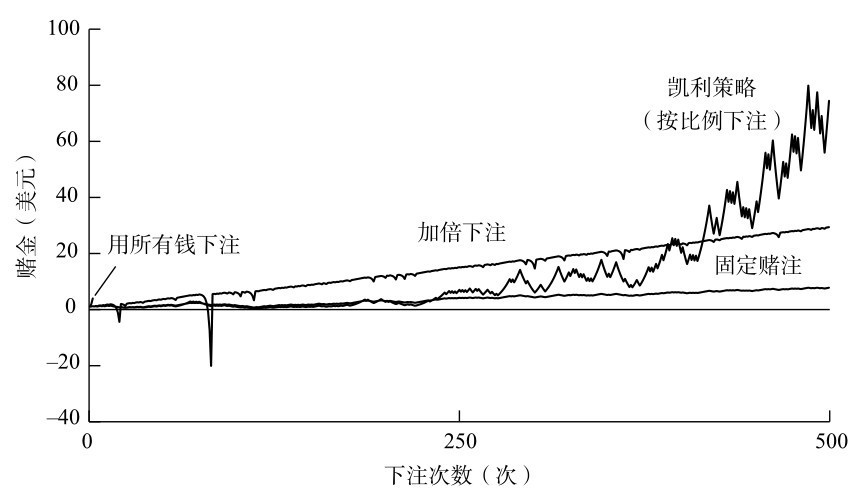
图9-8 500次赌局的模拟结果，每次的胜率是55%，开始时的赌金是一美元。固定赌注、加倍下注和凯利策略第一次下注时的赌注是10美分。用所有钱下注的策略在每一局中都会用所有金额下注
小约翰·凯利（John Kelly Jr）是得克萨斯州的一位数学家，他在1956年的一篇论文中概述了一个著名的下注策略公式。埃德·索普在21点的赌桌上把这一理论付诸实践，结果十分惊人。“用一位将军的话说，它又快又好。”只要有微小的优势和明智的资金管理，你就可以获得巨大的回报。我问索普，在21点中赚钱，哪种方法更重要，是算牌还是使用凯利策略。“我认为，几十年的研究达成的共识是，下注策略可能在你将获得的收益中占据三分之二或四分之三，而游戏策略可能占三分之一到四分之一。所以下注策略要重要得多。”他回答。凯利策略后来帮助索普在金融市场上获利800多亿美元。
埃德·索普在1962年出版的《击败庄家》一书中介绍了他发明的算牌系统。他在1966年出版的第二版中改进了方法，这种方法还计入了牌面等于10的牌（J、Q、K和10）。尽管牌面是10的牌对赔率的影响比牌面等于5的牌要小，但它们的数量更多，因此更容易识别出优势。《击败庄家》的销量超过100万册，它一直激励着广大的赌徒。
为了应对算牌的威胁，赌场尝试了各种策略。最常见的是使用好几副牌，因为牌越多，算牌就越困难，好处也就越少。“教授阻挡者”是一种可以一次洗许多副牌的发牌盒，它的名字是为了纪念索普。赌场不得不将使用电脑预测轮盘赌定为一种犯规行为。
索普最后一次玩21点是在1974年。“我们一家人去了斯波坎的世界博览会，回来的路上我们在哈拉斯（赌场）停了下来，我让孩子们给我几个小时，因为我想赚回这趟旅行的钱。最后我做到了。”
《击败庄家》不仅是一本赌博经典，也在经济和金融界引起了反响。受索普的书的启发，一代数学家开始建立金融市场的模型，并将下注策略应用到这些模型中。其中两位数学家是费希尔·布莱克（Fischer Black）和迈伦·斯科尔斯（Myron Scholes），他们提出了布莱克-斯科尔斯公式，给出了给金融衍生品定价的方法，这是华尔街最著名（也是最臭名昭著）的公式。索普开启了一个定量分析师为王的时代，“定量分析师”（在英语中简称为quant）指帮助银行寻找精明的投资方式的数学家。“《击败庄家》算是第一本出版的定量图书，它直接引发了一场可以说是革命的运动。”索普说，他可以说是有史以来第一位定量分析师。他的续作《击败市场》帮助了证券市场转型。20世纪70年代初，他和一位商业伙伴共同创立了第一只“市场中性”的衍生产品对冲基金，也就是说，这只基金避免了所有市场风险。从那时起，索普开发出了越来越多经过成熟计算的金融产品，这让他变得非常富有（对于一位数学教授来说是这样）。他曾管理一只著名的对冲基金，但现在他负责管理家族基金，只投资自己的钱。
2008年9月，我见到了索普。我们坐在他位于纽波特海滩一座大厦里的办公室，从这里可以俯瞰太平洋。那是一个典型的加利福尼亚州才有的好天气，湛蓝的天空万里无云。索普很有学者风范，虽没有认真仔细和深思熟虑的样子，但也非常敏锐而幽默。就在一周前，雷曼兄弟银行刚刚申请破产。我问索普，他是否感到一丝愧疚，因为他帮助建立的一些机制导致了数十年来最大的金融危机。“问题不在于衍生产品，而在于对衍生产品缺乏监管。”他回答道，这个回答或许有些预见性。
这让我好奇，既然现在全球金融背后的数学已经如此复杂，政府有没有找他咨询过意见。“我印象里是没有，没有！”他笑着说，“如果他们来的话，我这里有很多东西可以教他们！但这其中很多事情具有浓厚的政治色彩，团体的性质也很强。”他说，如果你想让别人听到你的声音，你必须住在东海岸，和银行家以及政客打高尔夫球，一起共进午餐。“但我在加利福尼亚州，这里风景很好……我只是在玩数学游戏。我不会和这些人打交道，只是偶尔会碰见。”但索普很喜欢自己作为局外人的身份。他甚至没把自己当成金融界人士，尽管他已经在金融界工作40年了。“我认为我是一个将知识应用于分析金融市场的科学家。”事实上，挑战传统智慧是他一生的主题，他一次又一次地做到了这点。他认为，聪明的数学家总能击败赔率。
我同样感兴趣的是，对概率有如此深入的理解，是否能帮助他避免踏入这一领域内的许多反直觉陷阱。比如，他曾陷入赌徒谬误吗？“我觉得我很擅长说不，但我也花了一些时间才学会这一点。当我最初开始学习股票时，我付出了很大的代价。一开始，我会做出不太理性的决定。”
我问他是否玩过彩票。
“你的意思是下错赌注吗？”
我说，我猜他没有。
“我没办法。你知道你偶尔不得不这么做。假设你的全部净资产就是你的房子，从预期价值的角度来看，为你的房子投保是一个不好的选择，但从长期生存的角度来看，这很可能是谨慎的做法。”
我问：“所以你为你的房子投过保吗？”
他停了一会儿说：“是的。”
他停顿了一下是因为他正在计算自己到底有多富有。“如果你足够富有，就不必为小的物品投保。”他解释道，“如果你是一位亿万富翁，拥有一套价值百万的房子，你是否为它投保并不重要，至少从凯利标准的角度来说是这样的。你不需要付钱来保护自己免受这种相对较小的损失，你最好把钱拿去投资更好的东西。”
“我到底有没有给房子投保？投了，我想我是投了的。”
我读到过一篇文章，其中提到索普计划在死后冷冻他的尸体。我告诉他这听起来像是一场赌博，而且是非常典型的加利福尼亚人的赌博。
“不过，我一位喜欢科幻的朋友说：‘这是唯一的选择。’”
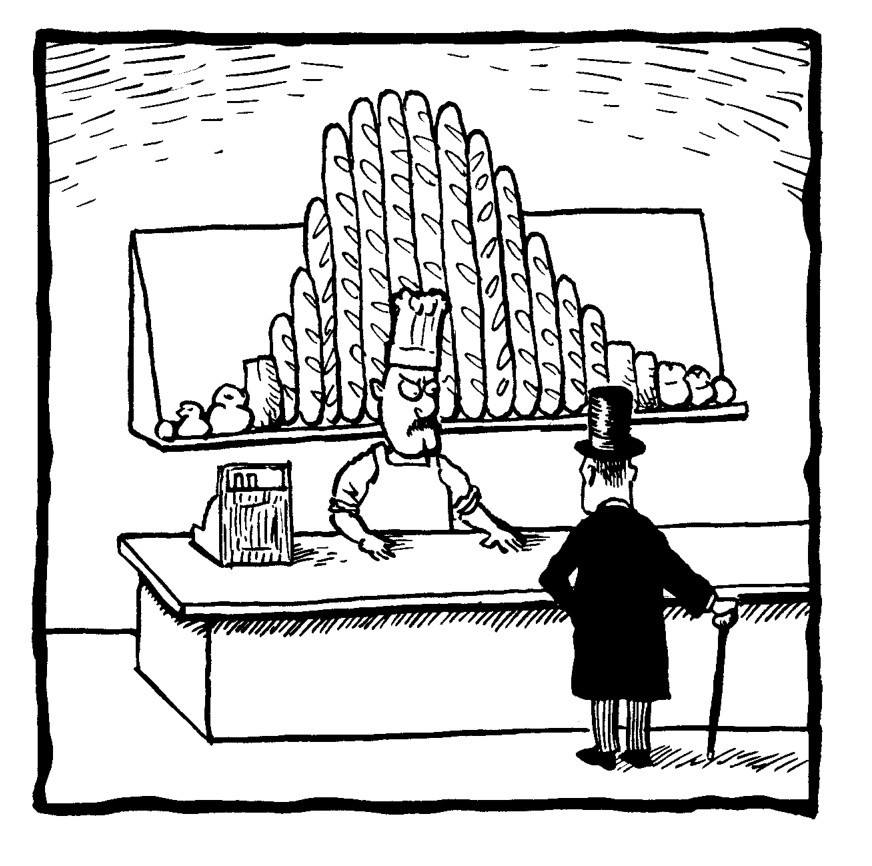
[1] 西方汽车后视镜上有时会挂一对色子装饰，是种幸运的象征。——译者注
[2] 图卢兹市名原文Toulouse与英语的to lose（输掉）发音类似。——译者注
[3] 美国费城独立厅中的大钟，美国宣布独立时此钟曾被敲响。——编者注
[4] 滚存指某一期彩票奖金由于无人领取，被存入下期奖池的情况。——编者注
[5] 埃德·索普生于1932年。——译者注